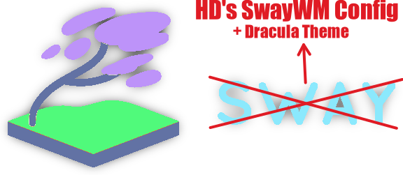

SwayWM Dracula Config
Table of Contents

1. About This Config
SwayWM Official Website (https://swaywm.org) Read `man 5 sway` for a complete reference.
2. Personal Config
Set mod variable
- Mod1 =
ALT - Mod4 =
SUPER
set $mod Mod4
To do an in place reload of the configuration file use $mod+Ctrl+r
#Reload the configuration file bindsym $mod+Ctrl+r reload
2.1. Variables
Set various variables for use later in this config
Home row direction keys, like vim
set $left h set $down j set $up k set $right l
Set browser, term, menu, lock, and fm variables
set $browser qutebrowser set $fm thunar set $term kitty #set $lock swaylock
Note: Using swaylock may make more sense on a system which does not have Hyprland installed. Unfortunately regular swaylock (as opposed to swaylock-effects) has limited customization potential.
set $lock hyprlock # Note: pass the final command to swaymsg so that the resulting window can be opened # on the original workspace that the command was run on. #set $menu fuzzel | swaymsg exec -- set $menu rofi -show combi -combi-modi drun,run,recursivebrowser | swaymsg exec --
2.2. Input Configuration
2.2.1. Touchpad
touchpad configuration
You can get the names of your inputs by running: swaymsg -t get_inputs. Read `man 5 sway-input` for more information about this section.
input "1267:40:Elan_Touchpad" {
dwt enabled
tap enabled
natural_scroll enabled
middle_emulation enabled
}
2.2.2. Keybindings
- Functions
Resize Mode Resize a container (window) with keyboard instead of mouse
- left will shrink the containers width
- right will grow the containers width
- up will shrink the containers height
- down will grow the containers height
mode "resize" { bindsym $left resize shrink width 10px bindsym $down resize grow height 10px bindsym $up resize shrink height 10px bindsym $right resize grow width 10px # Ditto, with arrow keys bindsym Left resize shrink width 10px bindsym Down resize grow height 10px bindsym Up resize shrink height 10px bindsym Right resize grow width 10px # Return to default mode bindsym Return mode "default" bindsym Escape mode "default" } bindsym $mod+r mode "resize"
Kill Focused Window
bindsym $mod+Shift+q kill , exec --no-startup-id mpv /usr/share/sounds/Oxygen-Window-Close.ogg
Alt Tab
bindsym Alt+Tab workspace back_and_forth
- Scratchpad
Sway has a "scratchpad", which is a bag of holding for windows. You can send windows there and get them back later.
# Move the currently focused window to the scratchpad bindsym $mod+Shift+minus move scratchpad , exec --no-startup-id mpv /usr/share/sounds/Oxygen-Window-Minimize.ogg # Show the next scratchpad window or hide the focused scratchpad window. # If there are multiple scratchpad windows, this command cycles through them. bindsym $mod+minus scratchpad show , exec --no-startup-id mpv /usr/share/sounds/Oxygen-Window-Maximize.ogg
Drag floating windows by holding down $mod and left mouse button. Resize them with right mouse button + $mod follow. Despite the name, also works for non-floating windows. Change normal to inverse to use left mouse button for resizing and right mouse button for dragging.
floating_modifier $mod normal
- Applications
Open a Terminal
bindsym $mod+Return exec $term
Open Run Launcher
#bindsym $mod+d exec $menu , exec --no-startup-id mpv /usr/share/sounds/freedesktop/stereo/bell.oga bindsym $mod+d exec $menu
Open Emacs
bindsym $mod+e exec emacs
Open File Manager
bindsym $mod+m exec $fm
Open Internet Browser
bindsym $mod+b exec $browser
2.2.3. Movement
- Focus
Move your focus around using HJKL
bindsym $mod+$left focus left bindsym $mod+$down focus down bindsym $mod+$up focus up bindsym $mod+$right focus right
Move your focus around using arrow keys
bindsym $mod+Left focus left bindsym $mod+Down focus down bindsym $mod+Up focus up bindsym $mod+Right focus right
Move the focused window with same keys, just add Shift
bindsym $mod+Shift+$left move left bindsym $mod+Shift+$down move down bindsym $mod+Shift+$up move up bindsym $mod+Shift+$right move right # Ditto, with arrow keys bindsym $mod+Shift+Left move left bindsym $mod+Shift+Down move down bindsym $mod+Shift+Up move up bindsym $mod+Shift+Right move right
Move focus to the parent container
bindsym $mod+a focus parent
Switch focus to workspace with urgent window automatically
for_window [urgent=latest] focus - Workspaces
can have more than 10 workspaces note: workspaces can have any name you want, not just numbers. we just use 1-10 as the default.
bindsym $mod+1 workspace 1 bindsym $mod+2 workspace 2 bindsym $mod+3 workspace 3 bindsym $mod+4 workspace 4 bindsym $mod+5 workspace 5 bindsym $mod+6 workspace 6 bindsym $mod+7 workspace 7 bindsym $mod+8 workspace 8 bindsym $mod+9 workspace 9 bindsym $mod+0 workspace 10
move focused container to workspace
bindsym $mod+shift+1 move container to workspace 1 bindsym $mod+shift+2 move container to workspace 2 bindsym $mod+shift+3 move container to workspace 3 bindsym $mod+shift+4 move container to workspace 4 bindsym $mod+shift+5 move container to workspace 5 bindsym $mod+shift+6 move container to workspace 6 bindsym $mod+shift+7 move container to workspace 7 bindsym $mod+shift+8 move container to workspace 8 bindsym $mod+shift+9 move container to workspace 9 bindsym $mod+shift+0 move container to workspace 10
Assigning apps to specific Workspaces
- I would like to automatically separate Twitch and Discord tabs to workspaces 4 and 6 respectively. However this does not seem feasible at the moment, so I've just sent my browser i use for these sites to workspace 4.
assign [app_id="qutebrowser"] "1" assign [app_id="firefox"] "1" assign [title="newsboat"] "2" assign [title="cmus"] "2" assign [class="Emacs"] "3" assign [app_id="brave-browser"] "4" assign [class="steam"] "5"
- Layout stuff
You can "split" the current object of focus with $mod+y or mod+x for horizontal and vertical splits respectively.
bindsym $mod+y splith bindsym $mod+x splitv
toggle fullscreen for the current focus
bindsym $mod+f fullscreen
Toggle current container between tiling and floating Mode and swap focus between tiling and floating areas
bindsym $mod+Shift+space floating toggle bindsym $mod+space focus mode_toggle
Switch the current container between different layout styles
bindsym $mod+c layout stacking bindsym $mod+t layout tabbed bindsym $mod+s layout toggle split
2.3. Output Configuration
2.3.1. Brightness Control
Bind brightness controls to laptop brightness keys F5 and F6 (non func lock action)
bindsym XF86MonBrightnessUp exec light -A 10 bindsym XF86MonBrightnessDown exec light -U 10
2.3.2. Display
You can get the names of your outputs by running: swaymsg -t getoutputs
Display settings for laptop display
# Laptop Output output eDP-1 resolution 3840x2160 position 0,0 bg /home/user/.local/share/wallpapers/Lofi_Cat.png fill # virtual Wlroots output (used for testing) output WL-1 resolution 3840x2160 position 0,0 bg /home/user/.local/share/wallpapers/testing.jpg fill
Display settings for external HDMI monitor
output HDMI-A-1 resolution 3840x2160 position 3840,1920 bg /usr/share/wallpapers/summer_1am/contents/images/2560x1600.jpg fill scale 2.0 output HDMI-A-2 resolution 3840x2160 position 3840,1920 bg /usr/share/wallpapers/summer_1am/contents/images/2560x1600.jpg fill scale 2.0 output HDMI-A-3 resolution 3840x2160 position 3840,1920 bg /usr/share/wallpapers/summer_1am/contents/images/2560x1600.jpg fill scale 2.0 output HDMI-A-4 resolution 3840x2160 position 3840,1920 bg /usr/share/wallpapers/summer_1am/contents/images/2560x1600.jpg fill scale 2.0
Display settings for external Display Port monitor
output DP-1 resolution 1920x1200 position 0,1920 bg /usr/share/wallpapers/Cluster/contents/images/3840x2160.png fill output DP-2 resolution 1920x1200 position 0,1920 bg /usr/share/wallpapers/Cluster/contents/images/3840x2160.png fill output DP-3 resolution 1920x1200 position 0,1920 bg /usr/share/wallpapers/Cluster/contents/images/3840x2160.png fill
2.3.3. Screen Capture
Screenshot tool a simple screen shot mode using grim and slurp commands
set $screenshot 1 selected, 2 whole, 3 selected clipboard, 4 whole clipboard, 5 swappy mode "$screenshot" { bindsym 1 exec 'grim -g "$(slurp)" ~/ps_$(date +"%Y%m%d%H%M%S").png', mode "default" bindsym 2 exec 'grim ~/ps_$(date +"%Y%m%d%H%M%S").png', mode "default" , exec --no-startup-id mpv /usr/share/sounds/freedesktop/stereo/camera-shutter.oga bindsym 3 exec 'grim -g "$(slurp)" - | wl-copy', mode "default" bindsym 4 exec 'grim - | wl-copy', mode "default" bindsym 5 exec 'grim -g "$(slurp)" - | swappy -f -', mode "default" # back to normal: Enter or Escape bindsym Return mode "default" bindsym Escape mode "default" bindsym $mod+Print mode "default" } bindsym $mod+Print mode "$screenshot"
Color Picker tool a simple mode to find the hex value of any colored pixel on your display
# define color picker command bindsym $mod+Shift+p exec grim -g "$(slurp -p)" -t ppm - | convert - -format '%[pixel:p{0,0}]' txt:- | tail -n 1 | cut -d ' ' -f 4 | wl-copy
2.3.4. Sound Control
Bind audio controls to keyboard media keys
bindsym XF86AudioMute exec pactl set-sink-mute @DEFAULT_SINK@ toggle bindsym XF86AudioRaiseVolume exec pactl set-sink-volume @DEFAULT_SINK@ +5% bindsym XF86AudioLowerVolume exec pactl set-sink-volume @DEFAULT_SINK@ -5% bindsym XF86AudioMicMute exec pactl set-source-mute @DEFAULT_SOURCE@ toggle
2.4. Power Configuration
2.4.1. Exit Mode
# exit mode set $exit "exit: [s]leep, [p]oweroff, [r]eboot, [l]ogout" #, [w]indows" mode $exit { bindsym --to-code { s exec systemctl suspend, mode "default" p exec systemctl poweroff r exec systemctl reboot l exec swaymsg exit # w exec reboot-to-windows-somehow-lol.sh Return mode "default" Escape mode "default" $mod+x mode "default" } } bindsym --to-code $mod+p mode $exit
2.4.2. Swayidle
This will lock your screen after 300 seconds of inactivity, then turn off your displays after another 270 seconds, and turn your screens back on when resumed. It will also lock your screen before your computer goes to sleep.d
exec_always swayidle -w \ timeout 300 '$lock' \ timeout 570 'swaymsg "output * dpms off"' \ resume 'swaymsg "output * dpms on"' \ before-sleep '$lock'
2.4.3. Swaylock
Bind $lock to $mod+Ctrl+l and cause $lock to execute upon laptop lid close
# Screen lock bindsym $mod+Ctrl+l exec $lock ## Swaylock on lid closed bindswitch --reload --locked lid:on exec $lock
2.5. Auto-starts
Selected programs which execute upon the start of SwayWM
Programs which will execute upon SwayWM startup, and every time SwayWM config file is reloaded
exec_always /usr/libexec/polkit-gnome-authentication-agent-1 exec_always swaync exec_always nwg-wrapper -t bindings.pango -c bindings.css -p right -mr 50 -mt 150 -o eDP-1 exec_always nwg-wrapper -s date-wttr.sh -r 1800000 -c date-wttr.css -p right -a start -mr 50 -mt 50 -o eDP-1
Programs which will only execute upon SwayWM startup (not upon config reload)
# force reload of waybar at the Sway load. exec swaymsg "workspace 1; exec ~/.local/bin/launch-waybar" exec ckb-next -b # Enable Master/Stack layout # Default with splitting 50:50 exec /home/user/.local/bin/stacki3 45
2.6. Styling
2.6.1. Status Bar
Set Waybar as the default status bar for sway
bar {
swaybar_command waybar
}
2.6.2. Sway gaps
Global Sway Gaps Settings set inner/outer gaps
gaps inner 10 gaps outer 5
Additionally you can issue commands with the following syntax. This is useful to bind keys to changing the gap size.
gaps inner|outer current|all set|plus|minus <px>
gaps inner all set 10
gaps outer all plus 5
Smart gaps gaps used if only more than one container on the workspace)
smart_gaps onsmart borders (draw borders around container only if it is not the only container on the workspace).on|no_gaps(on=always active and nogaps=only active if the gap size to the edge of the screen is 0)
smart_gaps on
Smart Borders Same as smart gaps, but for borders
smart_borders on default_border pixel 2
Custom window borders + per app customization
client.focused "#5f5faf" "#5f5faf" "#ffffff" "#5f5faf" for_window [class="balena-etcher"] border pixel 2 for_window [class="steam"] border pixel 2 for_window [app_id="nm-applet"] border pixel 2 for_window [app_id="nm-connection-editor"] floating enable for_window [app_id="system-config-printer"] border pixel 2
2.6.3. GTK Themes
Set my preferred GTK theme
exec_always { gsettings set org.gnome.desktop.interface color-scheme prefer-dark gsettings set $gnome-schema gtk-theme 'Dracula' }
2.7. Includes
include /etc/sway/config.d/*
3. Deprecated Configs
A collection of settings recently removed from my sway config. Keeping them here incase a reversion is desired/needed.
Previous autotiling script. Uses dwindle layout opposed to master stack layout of current autotiling script
exec_always /home/user/.local/bin/autotiling -w 1 3 5 7 9
Program for night mode functionality. schedule functionality didn't work properly. may look into alternatives in future.
exec_always /usr/bin/gammastep
exec_always /usr/bin/gammastep-indicator
Enable network-manager-applet on startup. found this to be unnecessary for my current config. Keeping here for future reference, if i want to use it.
exec_always nm-applet --indicator
Enable blueman-applet on startup. same story as nm-applet
exec blueman-applet
Previous value for menu variable. Now using fuzzel. but keeping this incase of reversion to rofi
set $menu rofi -show combi -modes combi -combi-modes "drun,run,ssh,filebrowser" -hide-scrollbar true | swaymsg exec --
Start KDE Connect on startup. I Was Using KDE along side Sway for a time and experimented using kdeconnect to sync stuff between my laptop and my Android phone. I've since moved away from KDE and kdeconnect as I found i wasn't really using the provided features. Leaving this here incase I decide to tryout kdeconnect again in the future.
exec_always kdeconnect-cli -l